Guide d'utilisation
AITE Restaurant — service à table contrôlé
Un code par employé, un plan verrouillé, ce qui est parti en cuisine ne s'annule plus sans un chef de salle
Un code par employé, un plan verrouillé, ce qui est parti en cuisine ne s'annule plus sans un chef de salle
| Public visé | Serveurs, caissière, chef de salle, manager d'un restaurant, d'un bar ou d'une pizzeria qui sert à table, avec ou sans hôtel ; AITE pour l'installation |
|---|---|
| Modules | aite_pos_restaurant 18.0.1.0.6 (la caisse) · aite_pos_analytics 18.0.2.1.6 (ventes par famille) · aite_pos_analytics_hr 18.0.1.0.0 (le serveur dans les analyses) · aite_pos_credit 18.0.2.0.6 (ardoises) · aite_resto_carte_messager 18.0.1.0.0 (carte de démonstration) — Odoo 18 |
| Éditeur | AITE CONSULTING — Novembre 2026 |
| Illustrations | Captures réelles de l'application, prises sur la base de démonstration du restaurant (Odoo 18 Community, tablette 1 280 × 800). L'équipe des exemples est fictive : Brice et Nadège (serveurs, codes 1001 et 1002), Clarisse (caissière, 2001), Hervé (chef de salle, 3001), Sandrine (manager, 4001). |
Chaque tablette de la salle affiche le plan de salle. Personne n'y est « connecté » : pour toucher une table, encaisser ou annuler, l'employé tape son code personnel à 4 chiffres. La caisse sait ainsi qui a ouvert la table, qui a ajouté chaque produit, qui a encaissé et qui a autorisé chaque annulation. Le manager le relit le soir dans ses rapports.
Le parcours en trois règles
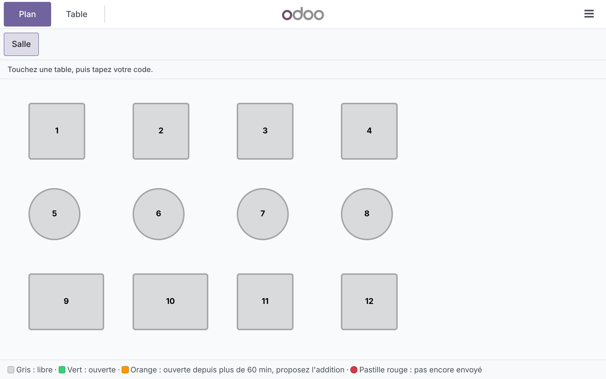
Chaque employé reçoit un « Niveau en caisse » sur sa fiche. Un niveau fait tout ce que fait le niveau d'avant, et plus. Ce tableau est la règle appliquée par la caisse et par le serveur (un seul tableau des droits dans le module).
| Geste | Serveur | Caissière | Chef de salle ou superviseur | Manager |
|---|---|---|---|---|
| Ouvrir ses tables, commander, envoyer, imprimer l'addition, changer le nombre de personnes, diviser, déplacer ou réunir ses tables | oui | oui | oui | oui |
| Retirer un produit pas encore envoyé (sans code, sans trace) | oui | oui | oui | oui |
| Toucher la table d'un collègue | non | oui | oui | oui |
| Ouvrir la caisse le matin | non | oui | oui | oui |
| Encaisser | non | oui | oui | oui |
| Imprimer le rapport des ventes (menu ≡) | non | oui | oui | oui |
| Vente sans table (si le réglage l'autorise) | non | oui | oui | oui |
| Annuler ce qui est parti : un produit, une table, les tables encore ouvertes à la fermeture | non | non | oui | oui |
| Entrée ou sortie d'espèces | non | non | oui | oui |
| Fermer la caisse | non | non | oui | oui |
| Fermer quand l'écart de caisse dépasse le maximum (s'il est réglé) | non | non | non | oui |
| Rembourser une addition payée | non | non | non | oui |
| « Mettre sur ardoise » | non | non | non | oui |
| Changer un prix (touche « Prix »), créer un produit | non | non | non | oui |
Les remises sont désactivées pour tout le monde sur une caisse au service à table contrôlé (c'est un réglage, pas un droit). Un employé sans niveau n'apparaît pas sur la caisse.
Règle d'or — un code ne se prête pas. Tout ce qui est fait sous un code est écrit au nom de son titulaire : « Ouverte par », « Encaissée par », le journal des saisies, « Autorisée par » sur chaque annulation.
Un restaurant seul (sans hôtel) reçoit 4 dossiers : aite_pos_restaurant, aite_pos_analytics, aite_pos_analytics_hr, aite_pos_credit. Odoo installe avec eux Point de Vente, Restaurant, Employés, Inventaire, Facturation et Ventes.
À l'installation, sans rien régler : une caisse « Restaurant » (modes Espèces et Mobile Money, salle « Salle »), la case « Service à table contrôlé » cochée, et les cinq motifs d'annulation.
Les comptes Odoo (Paramètres → Utilisateurs & Sociétés → Utilisateurs). Les employés de salle n'ont pas de compte Odoo : ils ont un code.
| Compte | Droits à donner | Pourquoi |
|---|---|---|
| la caisse (ouvert sur chaque tablette) | Point de Vente : Utilisateur ; Comptabilité : Facturation ; un courriel | sans Facturation, les entrées et sorties d'espèces sont refusées ; jamais « Administrateur » |
| le manager | Point de Vente : Administrateur ; Employés : Gestionnaire : Gérer tous les employés ; Comptabilité : Facturation ; POS Analytics AITE : Manager — Analyses POS | les niveaux et les codes des employés ; sans Facturation, Odoo refuse le rapport de session dès qu'une vente est payée |
| le chef de salle qui lit les rapports | Restaurant AITE : « Restaurant : lecture des rapports », rien d'autre | il lit les annulations sans aucun accès à la caisse |
Point de Vente → Configuration → Paramètres → la caisse → bloc Restaurant, juste après « Est un bar/restaurant ». Ces réglages sont réservés à l'administrateur d'Odoo (AITE). Chacun dit sous lui ce qui va se passer :

| Réglage (d'office) | La phrase « ce qui va se passer », mot pour mot |
|---|---|
| Service à table contrôlé (coché sur la caisse « Restaurant ») | « Coché : chaque employé tape son code à 4 chiffres pour ouvrir une table, encaisser ou annuler ; la caisse applique les quatre niveaux (serveur, caissière, chef de salle, manager), revient au plan après chaque envoi, verrouille ce qui est parti en cuisine ou au bar et garde la trace des saisies et des annulations. Cocher règle aussi, ci-dessous : connexion par code, contrôle des prix, remises désactivées, partage et impression de l'addition. Décocher arrête tout cela sur cette caisse. Se change seulement caisse fermée. » |
| Délai avant l'orange (minutes) (60) | « Une table ouverte depuis plus de 60 minutes passe à l'orange sur le plan, sans que personne ne touche l'écran : c'est le moment de demander au client s'il veut l'addition. La durée s'affiche sous le numéro de chaque table. » (la phrase suit le nombre tapé ; moins d'une minute est refusé) |
| Autoriser la vente sans table (décoché) | « Décoché : chaque vente se fait sur une table ; le bouton « + » n'apparaît pas. Un numéro de table tapé qui n'est pas sur le plan ouvre une table à ce nom, avec son nombre de personnes. Coché : le bouton « + » ouvre une vente au comptoir ou à emporter, sans table ni nombre de personnes ; elle compte 0 personne et n'entre pas dans le nombre de tables. Seuls la caissière, le chef de salle et le manager peuvent l'ouvrir. Se change seulement caisse fermée. » |
| Refuser la vente des produits épuisés (coché) | « Coché : un produit dont vous suivez le stock (case « Suivre l'inventaire » de sa fiche, par exemple une bière) ne peut plus être ajouté à une table quand il n'en reste plus, en comptant ce qui est déjà parti sur les tables ouvertes ; il redevient vendable moins d'une minute après l'enregistrement d'une entrée de stock. Les produits sans suivi (plats, pizzas, café) se vendent toujours. Saisissez le stock de départ avant le premier service, sinon ces produits seront refusés. » |
Règle d'or — réglez la case et « Autoriser la vente sans table » avant d'ouvrir la caisse pour la première fois. Après chaque fermeture, la tablette rouvre d'elle-même une session en « Contrôle à l'ouverture » qui grise ces deux réglages, et l'administrateur ne peut pas la supprimer. Le délai de l'orange et le refus des épuisés, eux, se changent à tout moment (ils s'appliquent à la réouverture).
Bon réflexe — ne cochez jamais « Suivi des modifications de commandes » : avec des employés sans courriel, une baisse de quantité échoue, et le journal AITE suffit. Décocher « Se connecter avec Employés » ou « Est un bar/restaurant » est refusé tant que la case est cochée.
L'équipe. Employés → Nouveau : le nom, puis, dans « Caisse du restaurant », le « Niveau en caisse » (Serveur, Caissière, Chef de salle ou superviseur, Manager). Le « Code caisse » est proposé d'office quand on choisit le niveau. Aucun courriel.

Les motifs d'annulation. Point de Vente → Configuration → Motifs d'annulation. Cinq motifs sont posés d'office : « Erreur de saisie », « Client parti », « Plat refusé », « Produit manquant », « Autre ». La case « Précision obligatoire » (cochée sur « Autre ») oblige le chef de salle à écrire quelques mots. Un motif ne se supprime pas : on l'archive.
La salle et les tables. Point de Vente → Configuration → Plans de salle → « Salle » : les tables, avec leur numéro et leurs places. Le plan ne se modifie pas depuis la caisse.
La carte et les familles. Point de Vente → Configuration → Produits → Catégories de produits du PdV : les familles de l'écran de commande, sur trois niveaux (par exemple Nourriture > Pizzas ; Boisson > Alcoolisé > Bière). Les mêmes noms en catégories de produit (Inventaire → Configuration → Produits → Catégories de produits), que lisent encore le tableau de bord AITE et l'onglet « Par catégorie ». Sur chaque produit : le prix en FCFA, la case « Point de Vente », sa famille dans l'onglet « Point de Vente », et « Suivre l'inventaire » sur les seules boissons vendues à l'unité.
Le stock de départ. Sur la fiche de chaque produit suivi : Mettre la quantité à jour. Un produit suivi sans stock est refusé à la caisse.
Bon réflexe — la TVA. Odoo pose d'office sur chaque nouveau produit la TVA de 19,25 % hors taxes : un prix de 1 000 FCFA est encaissé 1 193 FCFA. Pour des prix de carte taxes comprises, AITE règle avec le comptable une taxe « prix TTC » avant la saisie de la carte.
Sur chaque tablette : se connecter avec le compte de la caisse → Point de Vente → « Restaurant » → Ouvrir la caisse. Le plan s'affiche et la fenêtre du code s'ouvre d'elle-même.
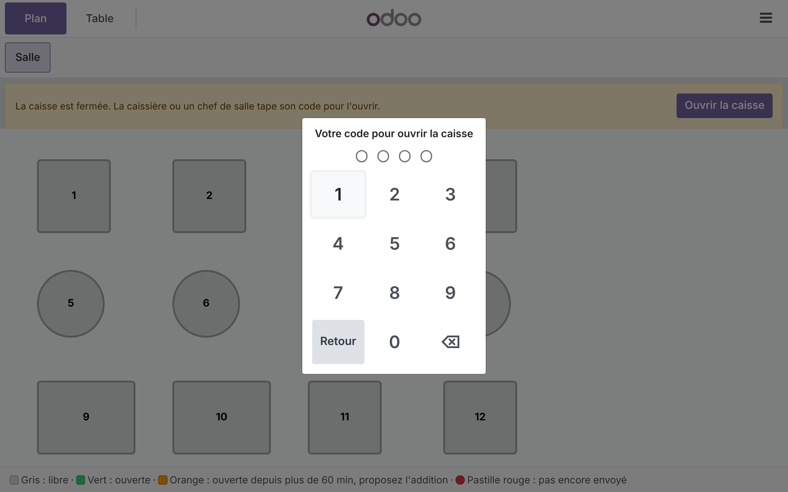
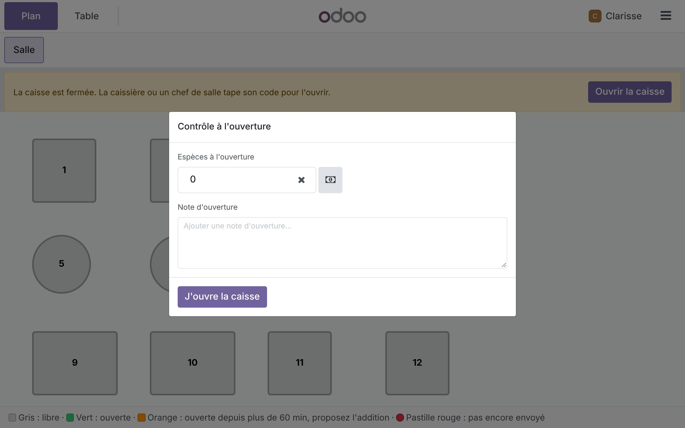
Si la fenêtre a été fermée par Retour, un bandeau reste sur le plan : « La caisse est fermée. La caissière ou un chef de salle tape son code pour l'ouvrir. », avec le bouton Ouvrir la caisse. Un serveur qui tape son code reçoit : « La caisse n'est pas encore ouverte. La caissière ou un chef de salle doit l'ouvrir avec son code. »
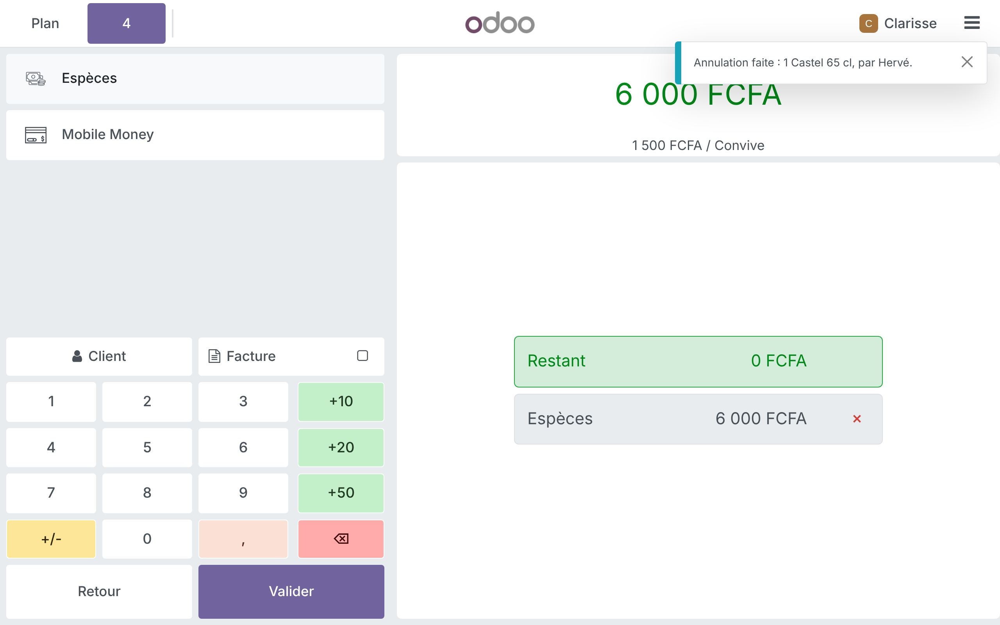
Bon réflexe — encaissez toujours sous votre propre code : « Encaissée par » est écrit par le serveur au nom de la personne identifiée au moment du paiement, et le manager le relit dans « Personnes et tables ».
Le serveur est encore sur la table : touchez J'encaisse. La fenêtre « Code de la personne qui encaisse » dit, par exemple, « Brice ne peut pas encaisser : la caissière tape son code ici. » Tapez votre code, puis Espèces et Valider.
Mesuré : 15 touches pour une part d'un seul produit. Une part porte le numéro de la table suivi d'une lettre (« 4B ») ; elle reste rattachée à son origine et ne compte pas une seconde fois dans les tables et les personnes.
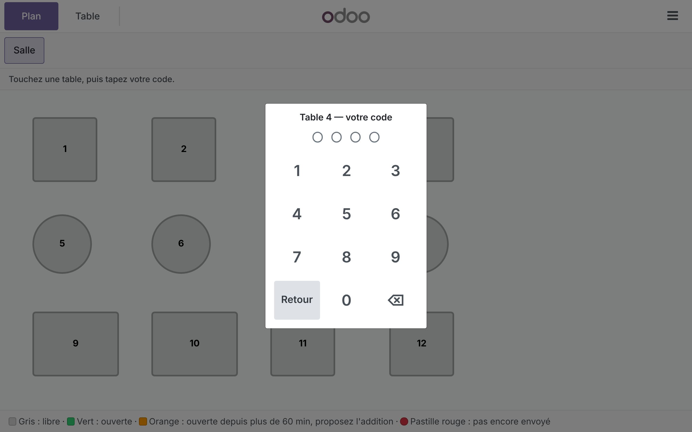
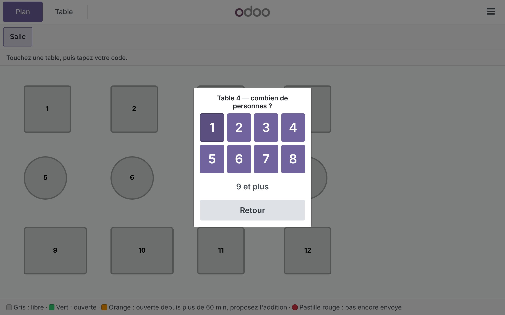
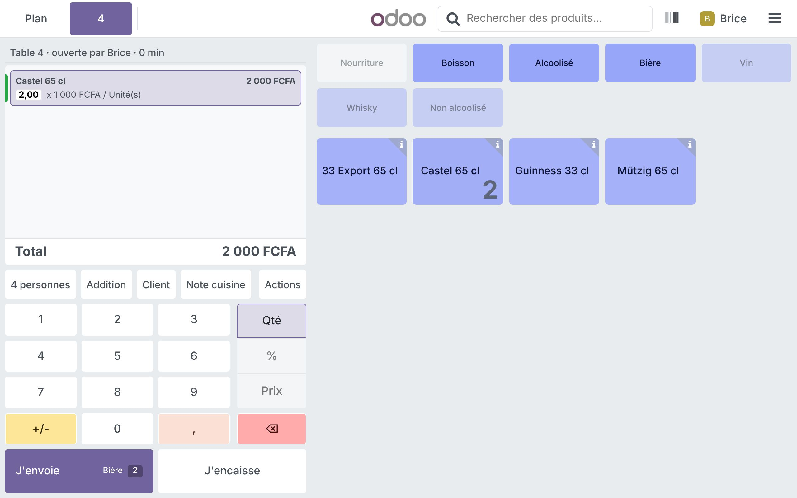
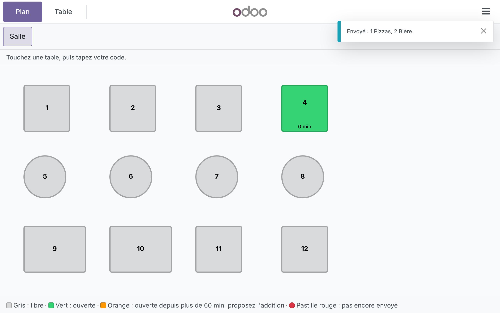
| Geste | Comment | Touches |
|---|---|---|
| Ajouter à sa table | la table, son code, les produits, J'envoie | 6 + n |
| Imprimer l'addition | la table, son code, Addition ; retour au plan s'il y a une imprimante (sans imprimante, Odoo affiche un aperçu : une touche de plus pour le fermer) | 6 |
| Retirer un produit pas encore envoyé | la ligne, ⌫, ⌫ (sans code, sans trace). La pastille rouge sur le plan signale une table qui a des produits pas encore envoyés. | 3 (2 si la ligne est déjà sélectionnée) |
| Changer le nombre de personnes | 4 personnes, puis le bon nombre | 2 |
| Revenir au plan | Plan : l'addition est enregistrée à votre nom et le poste se verrouille | 1 |
| Diviser, déplacer ou réunir sa table | Actions → Diviser l'addition ou Déplacer ou réunir | — |
Une boisson suivie en stock dont il ne reste plus rien (en comptant ce qui est déjà parti sur les tables ouvertes) n'est pas ajoutée. La caisse affiche « Produit épuisé » et dit quoi faire. Une entrée de stock enregistrée par le manager rend la vente en moins d'une minute, sans recharger la caisse.
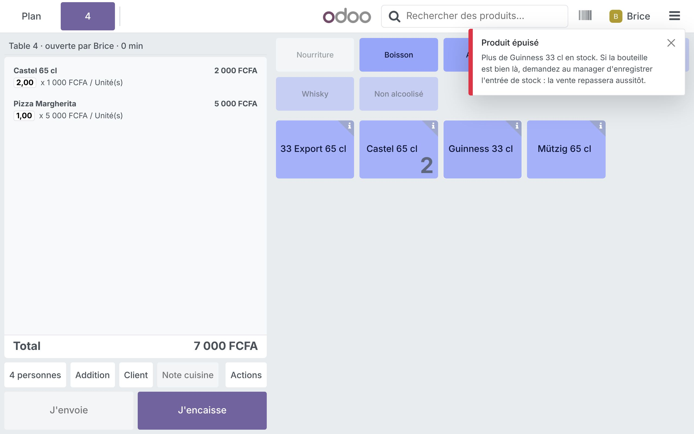
Bon réflexe — la table d'un collègue est refusée (« Table 4 : c'est la table de Brice. Seuls Brice, la caissière ou un chef de salle peuvent la modifier. »). Ne tapez jamais le code d'un autre : demandez à la caissière ou au chef de salle.
Règle d'or — envoyez tout de suite. Tant qu'un produit n'est pas parti, il se retire sans trace ; une fois parti, il ne s'annule plus qu'avec le code d'un chef de salle et un motif. Touchez « J'envoie » à chaque commande, pas à la fin du repas.
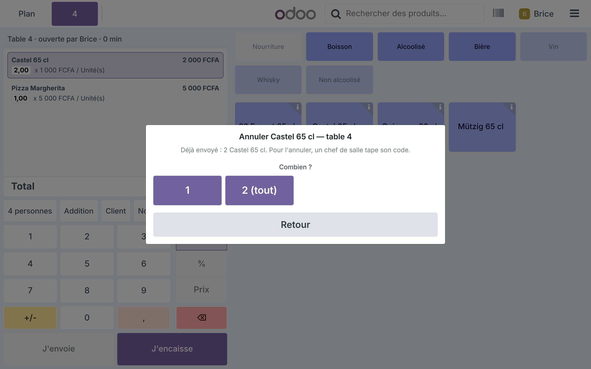
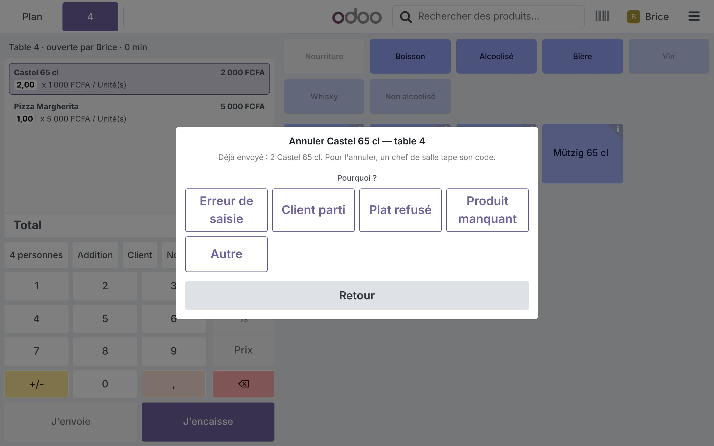
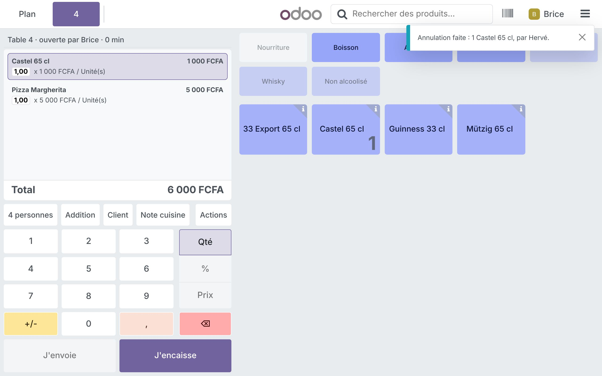
| Geste du chef de salle seul | Comment | Touches |
|---|---|---|
| Annuler un produit envoyé | la table, son code, la ligne, ⌫ ⌫, le motif (+ 1 si plus d'une unité). Un chef de salle déjà identifié ne retape pas son code. | 9 |
| Annuler une table qui a des produits envoyés | la table, son code, Actions → Annuler la table, le motif (« Annuler la table 4 », « Déjà envoyé : … ») | 8 |
| Sortir ou entrer des espèces | ≡ → Entrée ou sortie d'espèces, son code (« Votre code — entrée ou sortie d'espèces »), puis dans la fenêtre d'Odoo : « Cash sortant » (déjà choisi) ou « Cash entrant », le montant, le « Motif », Confirmer. Odoo confirme : « Vous avez réussi à faire un out en espèces de 1 000 FCFA. » | 7 + saisie |
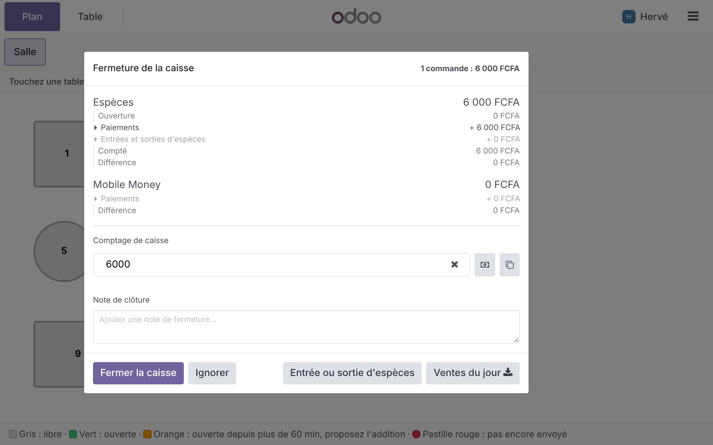
La caisse ne ferme pas avec des tables ouvertes : « 1 table est encore ouverte : 7. Encaissez-la, ou annulez-la avec un motif, avant de fermer. » Deux choix :
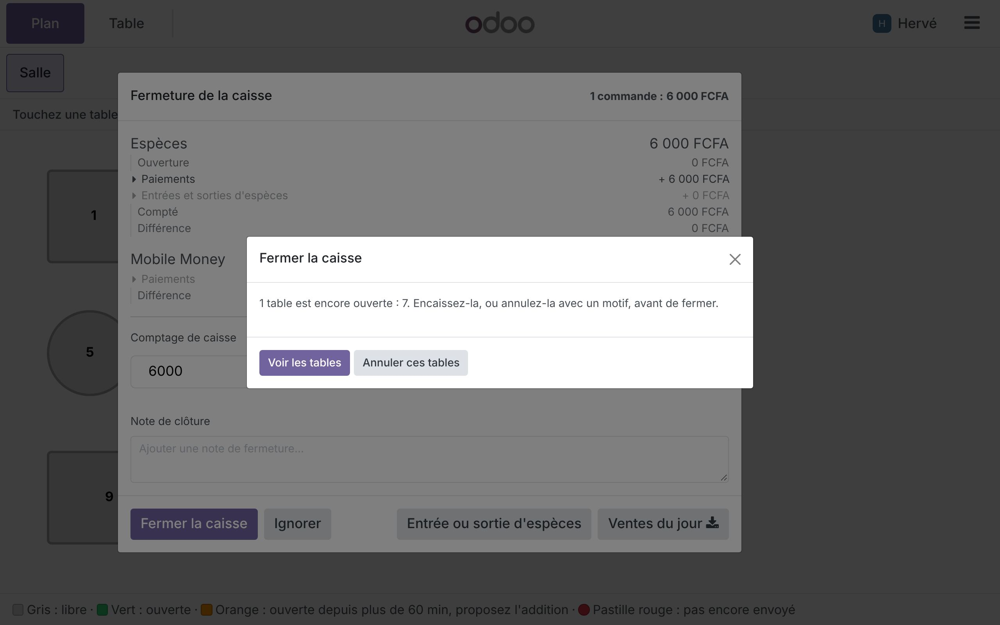
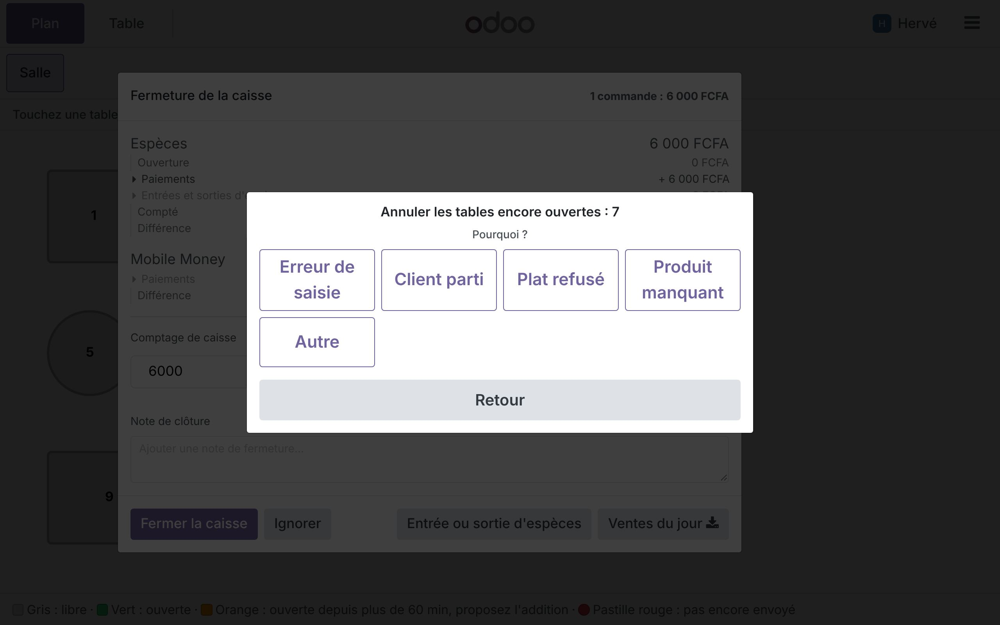
Restaurant → Annulations s'ouvre sur « Aujourd'hui ». Filtres « Cette semaine », « Ce mois », « Cette année », « Période », et « Sans code » (ce qui a été retiré sans autorisation : « Retrait sans code », « Annulation sans code ») ; regroupements par « Motif », « Demandée par », « Autorisée par », « Produit », « Jour ». Le chef de salle y accède avec le profil « Restaurant : lecture des rapports », sans aucun accès à la caisse.
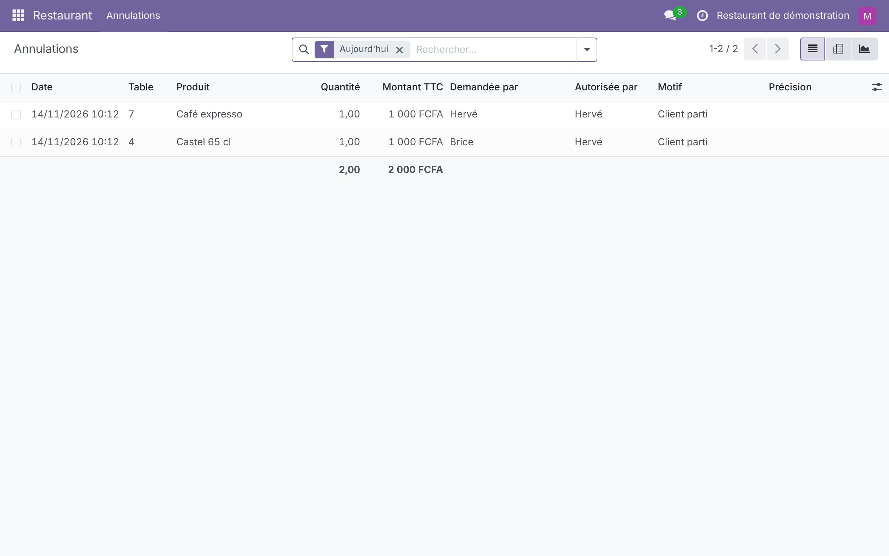
Bon réflexe — regardez le filtre « Sans code » chaque soir : il doit être vide. Une ligne y signale une baisse arrivée sans le code d'un chef de salle (depuis la gestion, ou un poste resté sur une copie ancienne).
| Geste | Comment | Touches |
|---|---|---|
| Prendre la main sur une addition ouverte au nom d'une caissière, puis encaisser | touchez le nom en haut de l'écran : « Qui prend la main ? Tapez votre code » ; votre code (Sandrine : 4001), J'encaisse, Espèces, Valider | 8 |
| Encaisser une table ouverte par un autre | comme la caissière ; « Ouverte par » reste figé au nom du serveur | 8 |
| Rembourser, changer un prix, « Mettre sur ardoise » | réservés au manager ; l'ardoise n'est proposée que si la caisse a un mode « ardoise », et ne naît que d'une addition réglée | — |
| Rendre un produit épuisé vendable | dans la gestion, fiche du produit → Mettre la quantité à jour | — |
Point de Vente → Analyse → Personnes et tables : tables, personnes, ventes sans table, articles et total, par jour, session, « Ouverte par », « Encaissée par ». Seules les additions réglées comptent ; une division ne compte qu'une fois, une réunion additionne les personnes, un remboursement ne compte pas.
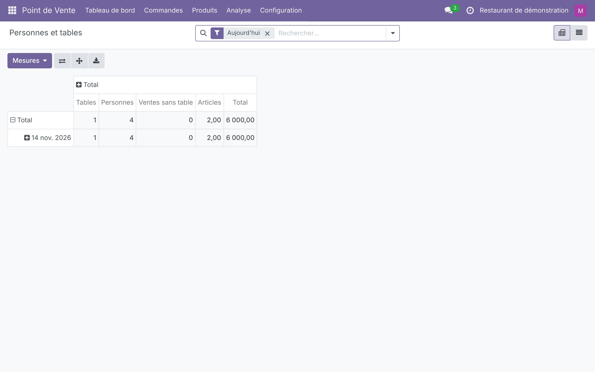
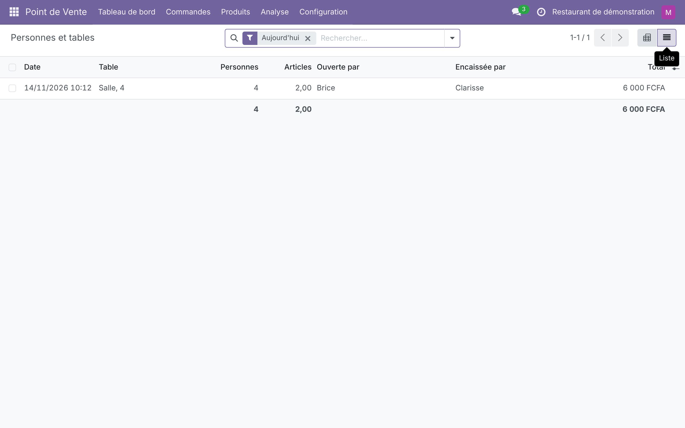
Point de Vente → Analyse → Analyse AITE → Tableau croisé & graphique, favori partagé « Ventes par famille » : les lignes Famille > Sous-famille, une colonne « Total » avec CA HT, CMV, Marge, Taux marge (%). Le champ de recherche « Famille » retrouve une famille par son nom exact (« Alcoolisé » ne ramène pas « Non alcoolisé »). Un article rangé plus bas que le troisième niveau compte sous son ancêtre de 3ᵉ niveau.
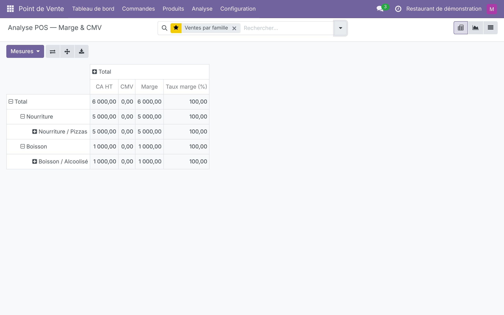
Avec la passerelle aite_pos_analytics_hr, l'analyse AITE gagne deux champs : « Serveur (ouverte par) » et « Encaissée par », à chercher ou regrouper (« Serveur », « Encaissée par »). L'ancien regroupement par utilisateur s'appelle « Compte Odoo » : sur une tablette ouverte sous le compte de la caisse, il ne dit pas qui a servi.
Dans Point de Vente → Commandes, la fiche d'une addition porte « Ouverte par », « Heure d'ouverture » (horloge du serveur), « Encaissée par », et deux boutons : Saisies (qui a ajouté chaque produit, à quelle heure) et Annulations. Le rapport de fermeture (bouton « Ventes du jour » de la fermeture, ou Point de Vente → Analyse → Détails des ventes) ajoute aux chiffres d'Odoo les tables, les personnes, les ventes sans table et les annulations de la session, avec leur motif et qui les a autorisées. Les quantités vendues de chaque produit se lisent dans « Détails des ventes ».
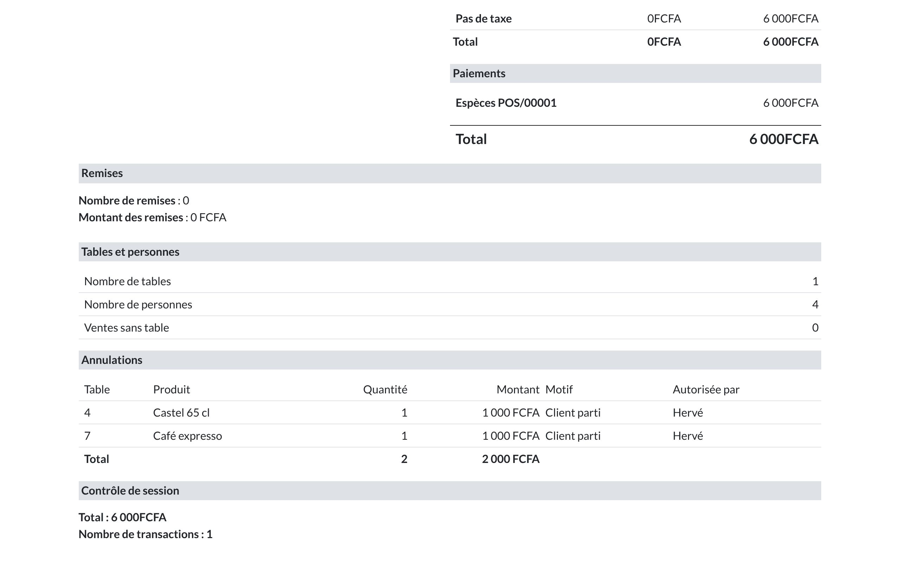
Règle d'or — le soir, trois lectures : le rapport de fermeture signé par le chef de salle, le filtre « Sans code » des annulations (vide), et « Personnes et tables » du jour.
Le plan se met à jour seul toutes les 30 secondes, sans que personne ne touche l'écran. La légende, en bas de chaque plan, dit mot pour mot :
« Gris : libre · Vert : ouverte · Orange : ouverte depuis plus de 60 min, proposez l'addition · Pastille rouge : pas encore envoyé »
| Couleur | Ce qu'elle veut dire | Ce que fait l'équipe |
|---|---|---|
| Gris | table libre | la toucher pour l'ouvrir (code, personnes) |
| Vert | table ouverte ; sous le numéro, la durée depuis l'ouverture (« 35 min », puis « 1 h 05 »), comptée depuis l'ouverture même après un déplacement | servir |
| Orange | ouverte depuis le délai réglé ou plus (60 minutes d'office) | proposer l'addition |
| Pastille rouge | des produits de la table ne sont pas encore envoyés | le serveur de la table touche « J'envoie » |
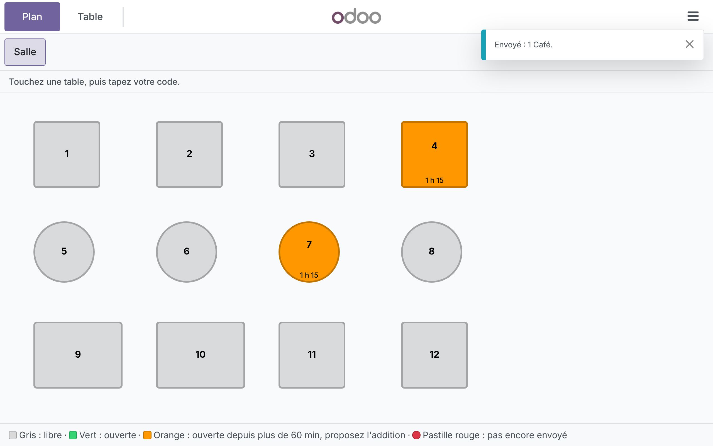
Bon réflexe — gardez les tablettes à l'heure : l'heure d'ouverture vient du serveur, mais la durée et la couleur sont comptées par chaque tablette.
Chaque refus est court et dit quoi faire. Les noms et numéros changent selon la table ; le reste est mot pour mot.
| Message | Quand | Que faire |
|---|---|---|
| « Code inconnu. Retapez votre code. » | code faux (dans la fenêtre) | retaper ses 4 chiffres ; code oublié : le manager le relit sur la fiche employé |
| « La caisse n'est pas encore ouverte. La caissière ou un chef de salle doit l'ouvrir avec son code. » | table touchée ou ouverture tentée par un serveur, caisse fermée | appeler la caissière ou le chef de salle |
| « Table 4 : c'est la table de Brice. Seuls Brice, la caissière ou un chef de salle peuvent la modifier. » | un serveur touche la table d'un collègue | laisser la table à son serveur, ou appeler la caissière ou le chef de salle |
| « Vente sans table 2 : c'est la vente de Clarisse. Seuls Clarisse, la caissière ou un chef de salle peuvent la modifier. » | même cas, sur une vente sans table | idem |
| « Il faut au moins une personne à table. » | 0 tapé après « 9 et plus » (rien ne s'affiche tant que rien n'est tapé : « Valider » reste simplement grisé) | taper le nombre de personnes |
| « Vous ne pouvez pas encaisser. Appelez la caissière : elle tapera son code ici. » | code d'un serveur sur « J'encaisse » | appeler la caissière |
| « Ce code ne peut pas annuler. Il faut celui d'un chef de salle, d'un superviseur ou du manager. » | code d'un serveur ou d'une caissière dans la fenêtre d'annulation | appeler le chef de salle |
| « Déjà envoyé : 2 Castel 65 cl. Pour l'annuler, un chef de salle tape son code. » | ⌫ sur un produit parti | le chef de salle tape son code, puis le motif |
| « Écrivez en quelques mots pourquoi. » | motif « Autre » sans précision | écrire la précision, « Valider » |
| « Ce produit vient d'être annulé sur un autre poste. Rien n'a changé ici. » | annulation déjà faite ailleurs | vérifier l'addition ; rien à refaire |
| « Plus de Guinness 33 cl en stock. Si la bouteille est bien là, demandez au manager d'enregistrer l'entrée de stock : la vente repassera aussitôt. » (titre « Produit épuisé ») | produit suivi épuisé | proposer autre chose, ou le manager saisit l'entrée de stock |
| « Pas de quantité négative sur une addition : pour retirer un produit, touchez ⌫. » (titre « Quantité négative ») | « +/- » qui ferait une ligne négative | retirer avec ⌫ |
| « Rien n'est parti : un autre poste a modifié cette table. Vérifiez l'addition, puis touchez de nouveau « J'envoie ». » | deux postes sur la même table | relire l'addition, « J'envoie » |
| « Toute l'addition est sélectionnée : il n'y a rien à diviser. Encaissez la table directement. » | division avec tous les produits | « J'encaisse » sur la table |
| « La table 7 est celle de Nadège : la caissière ou un chef de salle peut réunir ces tables. » | un serveur réunit vers la table d'un collègue | appeler la caissière ou le chef de salle |
| « La vente sans table n'est pas ouverte ici. Ouvrez une table du plan. » | « + » refusé (réglage décoché ou niveau serveur) | ouvrir une table du plan |
| « Seul un chef de salle ou le manager ferme la caisse. » | fermeture sous un code insuffisant | appeler le chef de salle |
| « L'écart de caisse dépasse le maximum autorisé : seul le manager peut fermer. Recomptez, ou appelez le manager. » | écart au-delà du maximum réglé | recompter ; sinon le manager ferme |
| « Seul un chef de salle ou le manager peut sortir ou entrer des espèces. » | espèces sous un code insuffisant | appeler le chef de salle |
| « Seul le manager peut rembourser une addition payée. » | remboursement | appeler le manager |
| « Seuls la caissière, le chef de salle et le manager impriment le rapport des ventes. » | « Imprimer le rapport » par un serveur | demander à la caissière |
| « Pas de réseau : annuler est impossible pour l'instant. Réessayez dans un moment. » (aussi « ouvrir la caisse », « fermer la caisse ») | réseau coupé | attendre le retour du réseau ; la vente, elle, continue |
| « Sélectionnez d'abord un client pour une vente à crédit. » | ardoise sans client | choisir le client, puis « Mettre sur ardoise » |
Dans la gestion (fiche employé, réglages) :
| Message | Que faire |
|---|---|
| « Donnez un code à 4 chiffres à Brice : sans code, il ne peut pas utiliser la caisse. » | remplir « Code caisse » |
| « Le code doit faire exactement 4 chiffres. » | 4 chiffres, ni lettre ni espace |
| « Le code 1001 est déjà celui d'un autre employé. Choisissez quatre autres chiffres : chaque employé a son propre code. » | changer les chiffres |
| « Décochez d'abord « Service à table contrôlé » : sans les codes personnels, la caisse ne saurait plus qui fait quoi. » | décocher la case d'abord, caisse fermée |
| « Le délai avant l'orange doit être d'au moins 1 minute. » | taper 1 ou plus |
Le module aite_resto_carte_messager (« AITE — Carte du restaurant Le Messager (démonstration) ») pose, dans la caisse au service à table contrôlé, la carte d'un restaurant client de Douala. Il sert aux démonstrations ; il ne remplace pas la saisie de la carte du client.
Ce qu'il pose
Installer : déposer le dossier à côté des modules du restaurant, puis Apps → « Mettre à jour la liste des Apps » → chercher « Messager » → Activer. Sans plan comptable, la carte est posée juste après son chargement. Le module ne renomme pas la société ; le désinstaller ne retire pas la carte. Refus : si la base porte déjà la carte de démonstration du jeu d'essai (Castel 65 cl, Pizza Margherita…), rien n'est posé et l'installation s'arrête avec un message (« cette base porte la carte de démonstration… ») ; installez la carte sur une base sans cette démonstration.
À faire valider par le client (chaque produit concerné le dit dans sa note interne) : les boissons ajoutées hors carte (eaux, jus, sodas, bières, café, thé) et leurs prix ; tous les coûts d'achat, estimés ; le prix du whisky « Black » (40 000 FCFA provisoires) ; les stocks de départ ; la TVA.
Bon réflexe — seules les boissons ont un coût : dans l'analyse AITE (marge et CMV), un plat paraît à 100 % de marge tant que le client n'a pas fourni son coût de revient. En démonstration, filtrez l'analyse sur la famille « Bar ».
| Situation | Réponse |
|---|---|
| « Le poste est revenu au plan tout seul. » | C'est voulu : après 5 minutes sans toucher l'écran, le poste revient au plan verrouillé (ce délai n'est pas réglable). L'addition est enregistrée ; retapez votre code. |
| « La barre du plan dit « Tableau » au lieu de « Table ». » | Collision de traductions d'Odoo (« Table » traduit « Tableau » par des modules installés avec le Point de Vente), constatée de façon instable. Elle est à traiter avec les traductions. |
| « La notification dit « Pizzas × 1 ». » | Elle compte par famille la plus fine du produit, sous la forme « famille × quantité » (« Envoyé : Pizzas × 1, Bière × 2. ») : le nom de la famille est repris tel quel, sans accord à faire. |
| « Le réseau est coupé. » | On vend, mais sans contrôle de stock, sans annulation, sans ouverture ni fermeture de caisse. Les saisies faites pendant la coupure sont attribuées à la personne identifiée quand l'addition est enfin enregistrée. |
| « Je ne peux plus cocher « Service à table contrôlé » ni la vente sans table. » | Une session « Contrôle à l'ouverture » existe (Odoo la rouvre après chaque fermeture) : ces deux réglages se font avant la mise en service. |
| « La fenêtre des espèces dit « Cash entrant », « Cash sortant », puis « un out en espèces ». » | Ce sont des textes d'Odoo, que le module ne reprend pas (la fenêtre d'Odoo est gardée telle quelle) : « Cash sortant » = sortie, « Cash entrant » = entrée ; « out » = sortie, « in » = entrée. |
| « Les articles s'affichent « 2,00 », les montants du tableau croisé sans FCFA. » | Format d'Odoo : « Articles » est un décimal (un produit pesé compte 0,5). |
| « Une seconde caisse (un bar) partage la base. » | Elle reçoit ses propres Espèces (« Espèces Bar »). Attention : « Personnes et tables » et « Ventes sans table » comptent aussi ses ventes. |
| « La passerelle des analyses par employé n'est pas installée. » | Sur une base où l'analyse et le restaurant étaient déjà installés : Apps → retirer le filtre « Apps » → chercher « par employé » → Activer. |
| « Hôtel avec restaurant. » | AITE règle d'abord le « Journal des encaissements » de la réception sur un journal d'espèces propre, sinon réception et caisse partagent le même journal d'espèces. |
Un code compte 4 touches ; n = le choix des produits. Prévu = spécification ; mesuré = service complet joué à l'écran par le tour automatique AiteParcoursTour (Chrome, 1 280 × 800).
| Rôle — geste | Prévu | Mesuré |
|---|---|---|
| Tous — prendre son poste | 0 | 0 |
| Caissière — ouvrir la caisse le matin | 5 | 5 |
| Serveur — ouvrir une table et envoyer | 7 + n | 9 (n = 2) |
| Serveur — ajouter à sa table et envoyer | 6 + n | 7 (n = 1) |
| Serveur — imprimer l'addition | 6 | 6 |
| Serveur — retirer un produit pas encore envoyé | 3 (2) | 2 |
| Serveur — changer le nombre de personnes | 2 | 2 |
| Serveur — produit épuisé refusé | — | 1 |
| Serveur + chef — annuler un produit envoyé, sur le poste du serveur | 3 + 5 (+ 1) | 9 |
| Chef seul — annuler un produit envoyé | 9 | 9 |
| Chef seul — annuler une table qui a des produits envoyés | 8 | 8 |
| Caissière — encaisser en espèces, somme exacte | 8 | 8 |
| Caissière — encaisser au poste d'un serveur resté identifié | 7 | 7 |
| Manager — prendre la main, puis encaisser | 8 | 8 |
| Caissière — deux parts d'une addition divisée | 14 + n | 15 (n = 1) |
| Chef — sortir des espèces | 7 + saisie | 18 (« 1000 » et « Monnaie ») |
| Chef — fermer la caisse, sans table ouverte | 7 + chiffres | 11 |
| Chef — fermer avec des tables ouvertes et les annuler | + 2 | 13 |
| Manager — encaisser une table ouverte par un autre | 8 | 8 |
| Une table servie de bout en bout | 27 + n | 30 (n = 3) |
Comptées sur Chrome à 1 280 × 800, pas encore sur la tablette du client. Ce guide est tiré du code du module (textes de la caisse, réglages, droits), des notes de version du lot 1 du restaurant et du cahier de recette (domaine R, 104 cas).